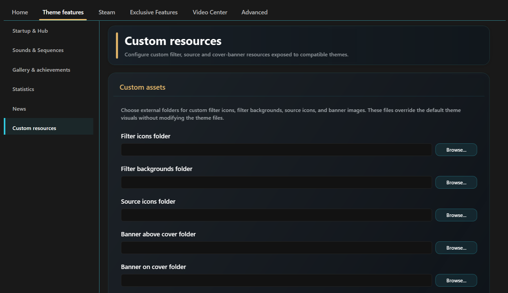

Covers, Banners & Custom Assets
This page covers visual elements attached to game covers and the custom resource folders managed by Aniki Helper.
Open Cover settings
From Aniki Fullscreen:
- Press Start / Menu.
- Open Settings.
- Open Customization.
- Select Covers.
Make the selected cover stand out
Enable:
- Animated cover focus border
- Cover reflection
Return to the Library and move between games to see the result.
Disable them if you prefer a calmer interface or want to reduce rendering effects.
Show completion status on covers
- Open Customization → Covers.
- Enable Show completion status.
- Make sure your games have a Playnite completion status assigned.
The text comes from your Playnite completion-status data.
Create or edit completion statuses
Use Playnite Desktop:
- Click the Playnite icon in the top-left.
- Open Library → Library Manager... or press Ctrl + W.
- Select Completion Statuses.
- Add, rename or remove statuses.
- Save.
- Assign the desired status to your games.
This lets the cover banner use status names that match the way you organize your library.
Show platform/source banners
- Open Customization → Covers.
- Enable Show platform banner.
- Choose whether the banner is displayed above the cover or over the artwork.
- Return to the Library and test games from different sources/platforms.
Aniki checks the game's Source first. If no matching source banner exists, it can fall back to the game's first Platform.
Show a small source/platform logo on covers
Enable Show logo on covers.
The same basic source/platform matching principle applies.
Open Custom Resources settings
Custom resource folders are configured in Aniki Helper Desktop settings.
- Open Playnite Desktop.
- Press F9.
- Open Extension settings → Generic → Aniki Helper.
- Open Theme features.
- Select Custom resources.

images/covers-banners-and-custom-assets-01.pngYou can configure external folders for:
- filter icons;
- filter backgrounds;
- source icons;
- banners above covers;
- banners on covers.
External folders are the recommended method because a theme update does not overwrite those files.
Exact filename matching
Custom resources use strict name matching.
For filter/source icons and banners:
- use PNG;
- use the exact Playnite name;
- match spaces and spelling.
Example:
Playnite source:
Steam
Required custom source icon:
Steam.png
Another example:
Filter preset:
My Games
Required filter icon:
My Games.png
If the name does not match, Aniki cannot associate the file with that source/filter.
Add a custom source icon
- Create or obtain a PNG.
- Name it exactly like the Playnite source.
- Put it in your custom Source icons folder.
- Open Aniki Helper → Custom resources.
- Select that folder as Source icons folder.
- Save.
- Reopen/restart Fullscreen if it does not update immediately.
Add a custom filter icon
- Find the exact filter preset name in Playnite.
- Create a PNG with that exact name.
- Put it in your Filter icons folder.
- Select that folder in Custom resources.
- Save.
Add a custom filter background
Filter backgrounds support common image formats such as:
- JPG / JPEG
- PNG
- WEBP
- BMP
- Name the image exactly like the filter preset.
- Put it in the custom Filter backgrounds folder.
- Select that folder in Aniki Helper.
- Save.
- Set Aniki's Library background source to the filter-background mode.
A file named Default can be used as a fallback when no exact filter background exists.
Custom banners
Use separate folders for:
- Banner above cover
- Banner on cover
For each folder:
- Create the banner as a PNG.
- Name it exactly like the Playnite Source or Platform.
- Put it in the corresponding custom banner folder.
- Select that folder in Aniki Helper → Theme features → Custom resources.
- Save.
Examples:
Steam.pngSony PlayStation 3.png
Aniki checks Source first, then the first Platform when no source match exists.
Custom icon priority
For supported icons, the intended priority is:
- Your custom file from the folder selected in Aniki Helper.
- Default file included with Aniki ReMake, when one exists.
- Text/fallback presentation when no usable image exists.
This means you can override only the sources/filters you want and leave everything else on the theme defaults.
Where are the theme's default icon files?
You normally do not need to edit them, but they are useful as examples.
Open the Aniki ReMake installation folder:
- Playnite Desktop.
- Press F9.
- Open Installed → Themes Fullscreen.
- Select Aniki ReMake.
- Click Installation Folder.
Current theme folders include:
Icons\FilterIcons\SourceIcons\Banner
The banner folder contains the theme's built-in banner resources.
Files edited inside the installed theme can be replaced by a future theme update. Prefer Aniki Helper's external custom folders for permanent customization.